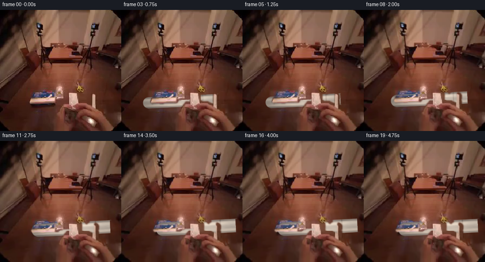
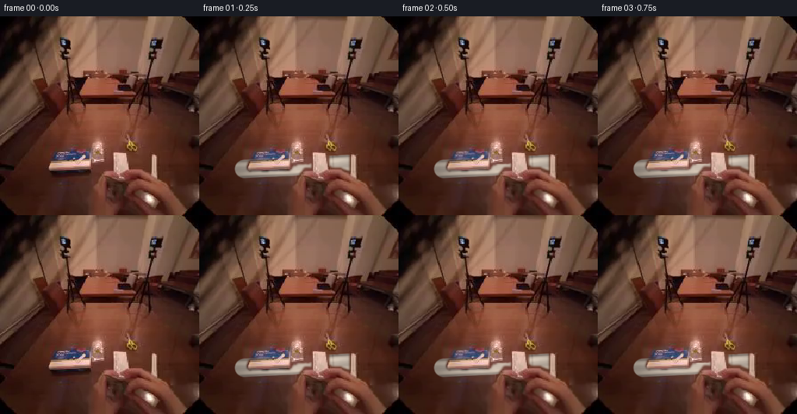
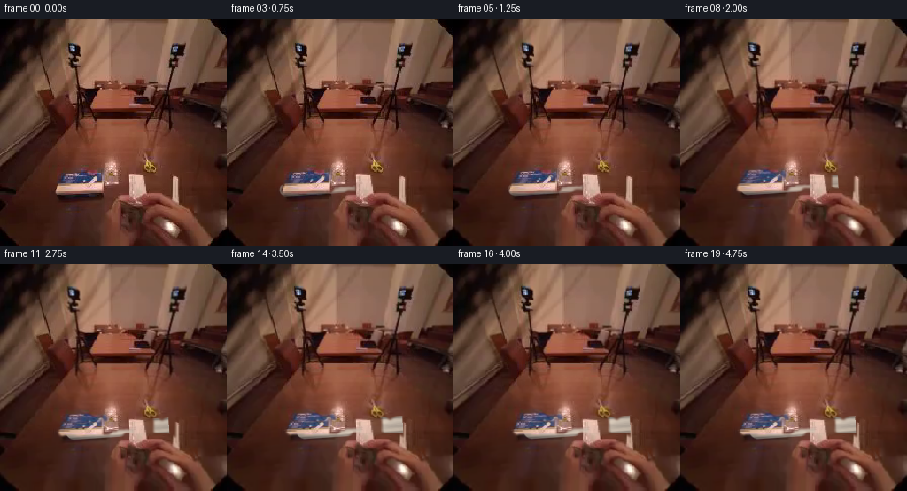
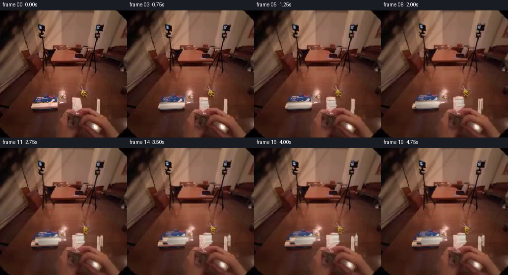
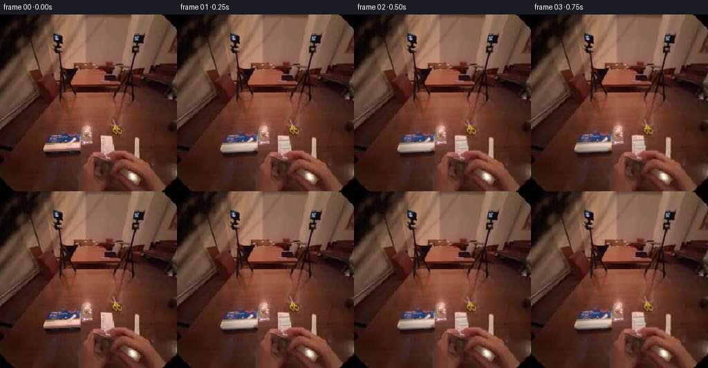
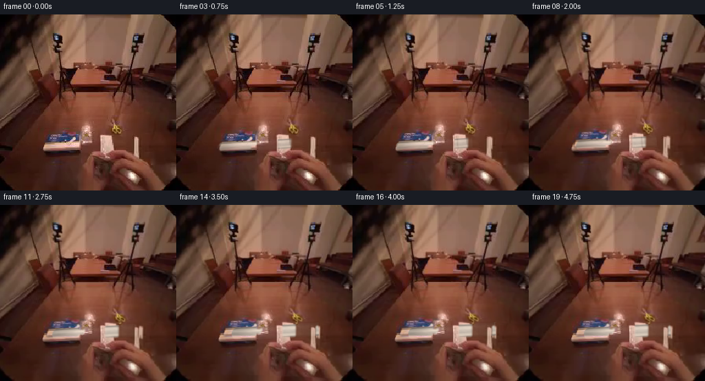
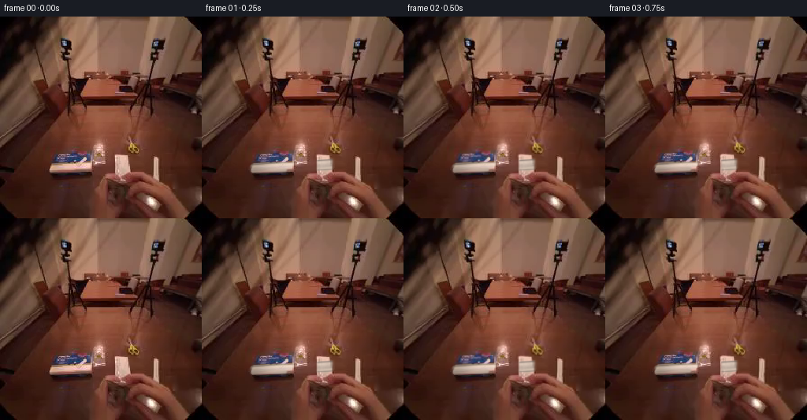

CODING AGENTS AS PIXEL WORLD MODELS
traex/DeepSeek-V4.1-Flash · common50_0026
点击播放 · 原生 RGB 像素
逐轮保存的候选
回放视频、检查图与代码变化。
每份候选均可单独播放。实际图片检查记录在下方工具轨迹中。
候选 01播放与检查图
点击播放 · 原生 RGB 像素


展开代码变化
--- 上一保存版本
+++ 本次保存版本
@@ -0,0 +1,295 @@
+"""Generate a short, deterministic first-person grasp-and-pull video.
+
+The source frame is treated as a still photographic plate. The animation is
+built from smooth inverse warps of that plate plus a small, source-matched
+tube/film layer. No external assets or models are used.
+"""
+
+from pathlib import Path
+
+import numpy as np
+from PIL import Image
+from scipy import ndimage as ndi
+
+import artifact_io
+
+
+WIDTH = 256
+HEIGHT = 256
+FRAMES = 20
+FPS = 4
+
+
+def smoothstep(value):
+ value = np.clip(value, 0.0, 1.0)
+ return value * value * (3.0 - 2.0 * value)
+
+
+def inverse_map(x, y, map_x, map_y):
+ """Bilinearly sample an RGB image at floating point coordinates."""
+ coords = np.stack([map_y, map_x], axis=0)
+ out = np.empty((HEIGHT, WIDTH, 3), dtype=np.float32)
+ for channel in range(3):
+ out[..., channel] = ndi.map_coordinates(
+ x[..., channel],
+ coords,
+ order=1,
+ mode="nearest",
+ prefilter=False,
+ )
+ return out
+
+
+def make_grip_warp(source, pull, grip):
+ """Warp the lower hand region with a gentle reach, roll, and squeeze."""
+ yy, xx = np.mgrid[0:HEIGHT, 0:WIDTH].astype(np.float32)
+
+ # The hand enters the shot from the lower edge. The weight keeps the
+ # photograph's edges stable while allowing the fingertips to travel.
+ lower = smoothstep((yy - 137.0) / 44.0)
+ lateral = np.exp(-((xx - 137.0) / 105.0) ** 4)
+ weight = lower * lateral
+
+ # Move toward the package mouth and close the fingers slightly around it.
+ dx = weight * (6.5 * pull + 1.2 * grip)
+ dy = -weight * (4.8 * pull + 1.5 * grip)
+
+ # A very small wrist roll follows the pull instead of making the hand slide
+ # as a rigid rectangle.
+ angle = np.deg2rad(-1.8 * pull)
+ pivot_x, pivot_y = 142.0, 205.0
+ rx = xx - pivot_x
+ ry = yy - pivot_y
+ roll_x = (np.cos(angle) * rx + np.sin(angle) * ry + pivot_x - xx) * weight
+ roll_y = (-np.sin(angle) * rx + np.cos(angle) * ry + pivot_y - yy) * weight
+
+ # The grip is strongest at the two visible finger groups.
+ grip_band = np.exp(-((yy - 190.0) / 23.0) ** 2) * weight
+ squeeze = grip_band * grip * (
+ 1.5 * np.exp(-((xx - 119.0) / 25.0) ** 2)
+ + 1.8 * np.exp(-((xx - 181.0) / 27.0) ** 2)
+ )
+ squeeze_dy = np.where(yy < 190.0, squeeze, -0.55 * squeeze)
+
+ map_x = xx - dx - roll_x
+ map_y = yy - dy - roll_y - squeeze_dy
+ return inverse_map(source, yy, map_x, map_y), weight, map_x, map_y
+
+
+def make_hand_mask(source):
+ """Soft mask for the warm, specular hand pixels around the tube."""
+ rgb = source.astype(np.float32)
+ r, g, b = rgb.transpose(2, 0, 1)
+ yy, xx = np.mgrid[0:HEIGHT, 0:WIDTH]
+
+ warm = (r > 108.0) & (r - g > 23.0) & (r - b > 31.0) & (g > 47.0)
+ highlight = (r > 164.0) & (g > 111.0) & (b > 88.0) & (r - b > 29.0)
+ area = (yy >= 154) & (yy <= 222) & (xx >= 46) & (xx <= 226)
+ mask = (warm | highlight) & area
+ mask = ndi.binary_closing(mask, iterations=2)
+ mask = ndi.binary_dilation(mask, iterations=2)
+ mask = ndi.gaussian_filter(mask.astype(np.float32), 1.25)
+ return np.clip(mask, 0.0, 1.0)
+
+
+def procedural_texture(seed=17):
+ """Deterministic, softly mottled surface texture."""
+ rng = np.random.default_rng(seed)
+ raw = rng.normal(0.0, 1.0, (HEIGHT, WIDTH)).astype(np.float32)
+ broad = ndi.gaussian_filter(raw, 7.5)
+ fine = ndi.gaussian_filter(raw, 1.1)
+ texture = 0.70 * broad / (broad.std() + 1e-6)
+ texture += 0.20 * fine / (fine.std() + 1e-6)
+ return np.clip(texture, -1.8, 1.8)
+
+
+def capsule_geometry(ax, ay, bx, by, radius):
+ yy, xx = np.mgrid[0:HEIGHT, 0:WIDTH].astype(np.float32)
+ vx, vy = bx - ax, by - ay
+ length = np.hypot(vx, vy)
+ ux, uy = vx / length, vy / length
+ px, py = xx - ax, yy - ay
+ along = (px * ux + py * uy) / length
+ across = -px * uy + py * ux
+
+ # Rounded capsule, with a slightly flattened end cap.
+ cap_radius = np.hypot((along - 1.0) * length, across)
+ body_distance = np.maximum(np.abs(across) - radius, (along - 1.0) * length)
+ distance = np.where(along <= 1.0, np.abs(across) - radius, cap_radius - radius)
+ distance = np.where(along < 0.0, np.hypot(along * length, across) - radius, distance)
+ distance = np.where((along > 1.0) & (np.abs(across) < radius), body_distance, distance)
+ return along, across, distance
+
+
+def draw_tube(frame, pull, texture):
+ """Composite a warm-white cylindrical tube sliding out toward camera."""
+ ax = 57.0 + 31.0 * pull
+ ay = 196.0 - 10.0 * pull
+ bx = 202.0 + 40.0 * pull
+ by = 189.0 - 11.0 * pull
+ radius = 11.6 + 2.5 * pull
+
+ along, across, distance = capsule_geometry(ax, ay, bx, by, radius)
+ edge = 1.45
+ alpha = np.clip((0.8 - distance) / edge, 0.0, 1.0)
+ alpha *= (along > -0.15).astype(np.float32)
+
+ q = np.clip(across / radius, -1.0, 1.0)
+ top_highlight = np.exp(-((q + 0.42) / 0.28) ** 2)
+ lower_bounce = np.exp(-((q - 0.58) / 0.30) ** 2)
+ rim_shadow = np.exp(-((np.abs(q) - 0.88) / 0.13) ** 2)
+
+ # Texture coordinates run along the tube and around its circumference.
+ tx = np.mod(along * 83.0 + 20.0, WIDTH - 1)
+ ty = np.mod((q + 1.0) * 54.0 + 70.0, HEIGHT - 1)
+ tex = ndi.map_coordinates(texture, [ty, tx], order=1, mode="reflect")
+
+ axial_light = 0.90 + 0.10 * np.sin(np.clip(along, 0.0, 1.0) * np.pi)
+ base = np.stack(
+ [
+ 196.0 * axial_light + 8.0 * tex,
+ 184.0 * axial_light + 7.0 * tex,
+ 171.0 * axial_light + 6.0 * tex,
+ ],
+ axis=2,
+ )
+ base += top_highlight[..., None] * np.array([34.0, 32.0, 28.0])
+ base += lower_bounce[..., None] * np.array([15.0, 13.0, 10.0])
+ base -= rim_shadow[..., None] * np.array([46.0, 45.0, 42.0])
+
+ # A narrow seam/rib near the visible end helps the cylinder read as a
+ # manufactured tube rather than a painted stripe.
+ rib_center = 0.79 + 0.015 * np.sin(pull * np.pi)
+ rib = np.exp(-((along - rib_center) / 0.010) ** 2) * (distance < 0.5)
+ base -= rib[..., None] * np.array([22.0, 24.0, 23.0])
+
+ # The part still inside the sleeve is dimmed by the translucent film.
+ inside = np.clip((0.30 - along) / 0.35, 0.0, 1.0)
+ base *= (1.0 - 0.20 * inside[..., None])
+
+ tube_alpha = alpha[..., None] * 0.95
+ return frame * (1.0 - tube_alpha) + np.clip(base, 0.0, 255.0) * tube_alpha
+
+
+def plastic_film(frame, pull, phase):
+ """Add a translucent, crinkled sleeve and moving caustic highlights."""
+ yy, xx = np.mgrid[0:HEIGHT, 0:WIDTH].astype(np.float32)
+ mouth_x = 124.0 + 13.0 * pull
+ left_x = 57.0 + 19.0 * pull
+ top_y = 168.0 - 5.0 * pull
+ bottom_y = 216.0 - 7.0 * pull
+
+ sleeve = (xx >= left_x) & (xx <= mouth_x)
+ taper = 2.8 * (1.0 - np.clip((xx - left_x) / max(mouth_x - left_x, 1.0), 0, 1))
+ sleeve &= (yy >= top_y + taper) & (yy <= bottom_y - taper)
+ sleeve_soft = ndi.gaussian_filter(sleeve.astype(np.float32), 1.8)
+
+ # Faint cool transmission, kept low so the warm photograph remains intact.
+ film_tint = np.array([188.0, 196.0, 199.0], dtype=np.float32)
+ frame = frame * (1.0 - 0.075 * sleeve_soft[..., None])
+ frame += film_tint * (0.075 * sleeve_soft[..., None])
+
+ # Two moving fold lines and a short torn edge at the sleeve mouth.
+ wave1 = top_y + 15.0 + 4.0 * np.sin((xx - left_x) * 0.11 + phase)
+ wave2 = bottom_y - 14.0 + 3.0 * np.sin((xx - left_x) * 0.13 - phase * 0.8)
+ d1 = np.abs(yy - wave1)
+ d2 = np.abs(yy - wave2)
+ fold = np.exp(-(d1 / 0.72) ** 2) + np.exp(-(d2 / 0.62) ** 2)
+ fold *= sleeve.astype(np.float32)
+ fold = ndi.gaussian_filter(fold, 0.45)
+
+ mouth = np.exp(-((xx - mouth_x) / 0.82) ** 2) * sleeve_soft
+ rim = 0.55 * mouth + 0.22 * fold
+ frame += rim[..., None] * np.array([48.0, 51.0, 52.0])
+
+ # Small detached highlights make the sleeve look like clear plastic.
+ sparkle = np.exp(-((xx - (91.0 + 5.0 * np.sin(phase))) / 7.0) ** 2)
+ sparkle *= np.exp(-((yy - (181.0 + 2.0 * np.cos(phase * 1.3))) / 1.1) ** 2)
+ frame += sparkle[..., None] * np.array([30.0, 34.0, 36.0])
+ return np.clip(frame, 0.0, 255.0)
+
+
+def global_camera(frame, pull):
+ """Very small push-in, enough to suggest an active egocentric camera."""
+ scale = 1.0 + 0.014 * pull
+ cx, cy = 144.0, 185.0
+ yy, xx = np.mgrid[0:HEIGHT, 0:WIDTH].astype(np.float32)
+ map_x = cx + (xx - cx) / scale
+ map_y = cy + (yy - cy) / scale
+ return inverse_map(frame, yy, map_x, map_y)
+
+
+def grade(frame, pull):
+ """Match the source's low-light warmth and add a restrained exposure lift."""
+ frame = frame.astype(np.float32)
+ lift = 1.5 * pull
+ frame += lift
+ # Preserve black level and avoid clipping the specular skin.
+ frame = 255.0 * np.power(np.clip(frame, 0.0, 255.0) / 255.0, 0.985)
+ return np.clip(frame, 0.0, 255.0)
+
+
+def generate_frames(source):
+ source_f = source.astype(np.float32)
+ hand_mask = make_hand_mask(source)
+ texture = procedural_texture()
+ frames = []
+
+ for index in range(FRAMES):
+ if index == 0:
+ frames.append(source.copy())
+ continue
+
+ time = index / (FRAMES - 1)
+ grip = smoothstep((time - 0.015) / 0.20)
+ pull = smoothstep((time - 0.13) / 0.67)
+ settle = smoothstep((time - 0.82) / 0.18)
+ pull *= 1.0 - 0.045 * settle
+
+ warped, _, map_x, map_y = make_grip_warp(source_f, pull, grip)
+ warped = global_camera(warped, pull)
+ warped = plastic_film(warped, pull, phase=time * 3.2)
+ warped = draw_tube(warped, pull, texture)
+
+ # The original fingertips sit in front of the newly revealed tube.
+ # Warping their soft mask with the plate keeps the occlusion attached
+ # to the hand instead of leaving a static cutout.
+ mask_warped = ndi.map_coordinates(
+ hand_mask,
+ [map_y, map_x],
+ order=1,
+ mode="nearest",
+ prefilter=False,
+ )
+ mask_warped = np.clip(mask_warped, 0.0, 0.90)[..., None]
+ hand_rgb = global_camera(source_f, pull)
+ warped = warped * (1.0 - mask_warped) + hand_rgb * mask_warped
+
+ warped = grade(warped, pull)
+ frames.append(np.clip(np.rint(warped), 0, 255).astype(np.uint8))
+
+ return np.stack(frames, axis=0)
+
+
+def main():
+ case_dir = Path(__file__).resolve().parent
+ source = np.asarray(Image.open(case_dir / "first_frame.png").convert("RGB"), dtype=np.uint8)
+ frames = generate_frames(source)
+
+ assert frames.shape == (FRAMES, HEIGHT, WIDTH, 3)
+ assert frames.dtype == np.uint8
+ assert np.array_equal(frames[0], source)
+
+ # Candidate sheet retained beside the deliverable for quick inspection.
+ picks = np.linspace(0, FRAMES - 1, 8).round().astype(int)
+ sheet = Image.new("RGB", (WIDTH * 4, HEIGHT * 2), (18, 18, 18))
+ for slot, frame_index in enumerate(picks):
+ image = Image.fromarray(frames[frame_index])
+ sheet.paste(image, ((slot % 4) * WIDTH, (slot // 4) * HEIGHT))
+ sheet.save(case_dir / "candidate_sheet.png")
+
+ artifact_io.save(frames, case_dir)
+
+
+if __name__ == "__main__":
+ main()
候选 02播放与检查图
点击播放 · 原生 RGB 像素

展开代码变化
--- 上一保存版本
+++ 本次保存版本
@@ -123,11 +123,11 @@
def draw_tube(frame, pull, texture):
"""Composite a warm-white cylindrical tube sliding out toward camera."""
- ax = 57.0 + 31.0 * pull
- ay = 196.0 - 10.0 * pull
- bx = 202.0 + 40.0 * pull
- by = 189.0 - 11.0 * pull
- radius = 11.6 + 2.5 * pull
+ ax = 66.0 + 22.0 * pull
+ ay = 193.0 - 6.0 * pull
+ bx = 161.0 + 38.0 * pull
+ by = 187.0 - 7.0 * pull
+ radius = 7.0 + 2.4 * pull
along, across, distance = capsule_geometry(ax, ay, bx, by, radius)
edge = 1.45
@@ -167,17 +167,17 @@
inside = np.clip((0.30 - along) / 0.35, 0.0, 1.0)
base *= (1.0 - 0.20 * inside[..., None])
- tube_alpha = alpha[..., None] * 0.95
+ tube_alpha = alpha[..., None] * (0.72 + 0.23 * smoothstep(pull))
return frame * (1.0 - tube_alpha) + np.clip(base, 0.0, 255.0) * tube_alpha
def plastic_film(frame, pull, phase):
"""Add a translucent, crinkled sleeve and moving caustic highlights."""
yy, xx = np.mgrid[0:HEIGHT, 0:WIDTH].astype(np.float32)
- mouth_x = 124.0 + 13.0 * pull
- left_x = 57.0 + 19.0 * pull
- top_y = 168.0 - 5.0 * pull
- bottom_y = 216.0 - 7.0 * pull
+ mouth_x = 124.0 + 17.0 * pull
+ left_x = 63.0 + 12.0 * pull
+ top_y = 172.0 - 3.0 * pull
+ bottom_y = 208.0 - 4.0 * pull
sleeve = (xx >= left_x) & (xx <= mouth_x)
taper = 2.8 * (1.0 - np.clip((xx - left_x) / max(mouth_x - left_x, 1.0), 0, 1))
@@ -186,8 +186,9 @@
# Faint cool transmission, kept low so the warm photograph remains intact.
film_tint = np.array([188.0, 196.0, 199.0], dtype=np.float32)
- frame = frame * (1.0 - 0.075 * sleeve_soft[..., None])
- frame += film_tint * (0.075 * sleeve_soft[..., None])
+ strength = 0.016 + 0.052 * smoothstep(pull)
+ frame = frame * (1.0 - strength * sleeve_soft[..., None])
+ frame += film_tint * (strength * sleeve_soft[..., None])
# Two moving fold lines and a short torn edge at the sleeve mouth.
wave1 = top_y + 15.0 + 4.0 * np.sin((xx - left_x) * 0.11 + phase)
@@ -199,13 +200,13 @@
fold = ndi.gaussian_filter(fold, 0.45)
mouth = np.exp(-((xx - mouth_x) / 0.82) ** 2) * sleeve_soft
- rim = 0.55 * mouth + 0.22 * fold
- frame += rim[..., None] * np.array([48.0, 51.0, 52.0])
+ rim = (0.55 * mouth + 0.22 * fold) * smoothstep(pull)
+ frame += rim[..., None] * np.array([42.0, 45.0, 46.0])
# Small detached highlights make the sleeve look like clear plastic.
sparkle = np.exp(-((xx - (91.0 + 5.0 * np.sin(phase))) / 7.0) ** 2)
sparkle *= np.exp(-((yy - (181.0 + 2.0 * np.cos(phase * 1.3))) / 1.1) ** 2)
- frame += sparkle[..., None] * np.array([30.0, 34.0, 36.0])
+ frame += sparkle[..., None] * np.array([30.0, 34.0, 36.0]) * smoothstep(pull)
return np.clip(frame, 0.0, 255.0)
@@ -242,7 +243,7 @@
time = index / (FRAMES - 1)
grip = smoothstep((time - 0.015) / 0.20)
- pull = smoothstep((time - 0.13) / 0.67)
+ pull = smoothstep((time - 0.10) / 0.70)
settle = smoothstep((time - 0.82) / 0.18)
pull *= 1.0 - 0.045 * settle
候选 03播放与检查图
点击播放 · 原生 RGB 像素


展开代码变化
--- 上一保存版本
+++ 本次保存版本
@@ -77,18 +77,37 @@
def make_hand_mask(source):
- """Soft mask for the warm, specular hand pixels around the tube."""
+ """Soft mask for the fingers that pass in front of the tube.
+
+ The bright interrupted strip in the source is the tube seen between two
+ finger groups. The occluders are therefore defined as the darker bands
+ crossing that strip, plus the hand entering from the lower frame edge.
+ """
rgb = source.astype(np.float32)
- r, g, b = rgb.transpose(2, 0, 1)
+ luminance = rgb.mean(axis=2)
yy, xx = np.mgrid[0:HEIGHT, 0:WIDTH]
- warm = (r > 108.0) & (r - g > 23.0) & (r - b > 31.0) & (g > 47.0)
- highlight = (r > 164.0) & (g > 111.0) & (b > 88.0) & (r - b > 29.0)
- area = (yy >= 154) & (yy <= 222) & (xx >= 46) & (xx <= 226)
- mask = (warm | highlight) & area
- mask = ndi.binary_closing(mask, iterations=2)
- mask = ndi.binary_dilation(mask, iterations=2)
- mask = ndi.gaussian_filter(mask.astype(np.float32), 1.25)
+ lower_hand = yy >= 202
+ left_hand = (xx <= 64) & (yy >= 168)
+ right_hand = (xx >= 204) & (yy >= 181)
+
+ finger_one = (
+ (xx >= 111)
+ & (xx <= 149)
+ & (yy >= 168)
+ & (yy <= 218)
+ & (luminance < 172)
+ )
+ finger_two = (
+ (xx >= 163)
+ & (xx <= 198)
+ & (yy >= 168)
+ & (yy <= 222)
+ & (luminance < 166)
+ )
+ mask = lower_hand | left_hand | right_hand | finger_one | finger_two
+ mask = ndi.binary_closing(mask, iterations=1)
+ mask = ndi.gaussian_filter(mask.astype(np.float32), 1.15)
return np.clip(mask, 0.0, 1.0)
@@ -123,9 +142,9 @@
def draw_tube(frame, pull, texture):
"""Composite a warm-white cylindrical tube sliding out toward camera."""
- ax = 66.0 + 22.0 * pull
+ ax = 66.0 + 24.0 * pull
ay = 193.0 - 6.0 * pull
- bx = 161.0 + 38.0 * pull
+ bx = 168.0 + 39.0 * pull
by = 187.0 - 7.0 * pull
radius = 7.0 + 2.4 * pull
@@ -140,7 +159,7 @@
rim_shadow = np.exp(-((np.abs(q) - 0.88) / 0.13) ** 2)
# Texture coordinates run along the tube and around its circumference.
- tx = np.mod(along * 83.0 + 20.0, WIDTH - 1)
+ tx = np.mod(along * 83.0 + 20.0 + 32.0 * pull, WIDTH - 1)
ty = np.mod((q + 1.0) * 54.0 + 70.0, HEIGHT - 1)
tex = ndi.map_coordinates(texture, [ty, tx], order=1, mode="reflect")
候选 04播放与检查图
点击播放 · 原生 RGB 像素


展开代码变化
--- 上一保存版本
+++ 本次保存版本
@@ -87,25 +87,25 @@
luminance = rgb.mean(axis=2)
yy, xx = np.mgrid[0:HEIGHT, 0:WIDTH]
- lower_hand = yy >= 202
- left_hand = (xx <= 64) & (yy >= 168)
- right_hand = (xx >= 204) & (yy >= 181)
-
+ # The visible fingers are the interrupted, rounded bands crossing the
+ # bright strip, not the bright strip itself.
finger_one = (
- (xx >= 111)
- & (xx <= 149)
- & (yy >= 168)
- & (yy <= 218)
- & (luminance < 172)
+ (xx >= 108)
+ & (xx <= 146)
+ & (yy >= 173)
+ & (yy <= 214)
+ & (luminance < 155)
)
finger_two = (
- (xx >= 163)
- & (xx <= 198)
- & (yy >= 168)
- & (yy <= 222)
- & (luminance < 166)
+ (xx >= 166)
+ & (xx <= 200)
+ & (yy >= 173)
+ & (yy <= 218)
+ & (luminance < 155)
)
- mask = lower_hand | left_hand | right_hand | finger_one | finger_two
+ lower_hand = (yy >= 198) & (xx >= 54) & (xx <= 215)
+ side_fingers = ((xx < 62) | (xx > 207)) & (yy >= 174)
+ mask = lower_hand | side_fingers | finger_one | finger_two
mask = ndi.binary_closing(mask, iterations=1)
mask = ndi.gaussian_filter(mask.astype(np.float32), 1.15)
return np.clip(mask, 0.0, 1.0)
可观测工具轨迹
实际执行的命令与返回图片。
命令 1exit 0
/bin/bash -c "sed -n '1,240p' prompt.txt"
命令 2exit 0
/bin/bash -c "sed -n '1,280p' GENERATION_RULES.md"
命令 3exit 0
/bin/bash -c "pwd && rg --files -g '"'!*.mp4'"' -g '"'!*.mov'"' -g '"'!*.avi'"' | sed -n '1,160p'"
命令 4exit 0
/bin/bash -c "find . -maxdepth 2 -type f -printf '%p %s bytes\\n' | sort"
命令 5exit 0
/bin/bash -c "sed -n '1,240p' artifact_io.py && printf '\\n--- task_spec ---\\n' && cat task_spec.json"
命令 6exit 0
/bin/bash -c "python - <<'PY'
from PIL import Image
import numpy as np
im=Image.open('first_frame.png')
a=np.array(im)
print('mode', im.mode, 'size', im.size, 'dtype', a.dtype, 'shape', a.shape)
print('channels min/max/mean/std', [(int(a[...,i].min()),int(a[...,i].max()),round(float(a[...,i].mean()),2),round(float(a[...,i].std()),2)) for i in range(a.shape[2])])
# sample a coarse 16x16 grid, represented by nearest named palette-like color summaries
for y in range(0,256,16):
row=[]
for x in range(0,256,16):
p=a[y:y+16,x:x+16].reshape(-1,3).mean(0).astype(int)
row.append('%02x%02x%02x'%tuple(p))
print('%3d'%y, ' '.join(row))
PY"命令 7exit 0
/bin/bash -c "python - <<'PY'
from PIL import Image
import numpy as np
im=np.array(Image.open('first_frame.png').convert('RGB'))
# dominant exact colors and quantized clusters
q=(im//16*16)
c,n=np.unique(q.reshape(-1,3),axis=0,return_counts=True)
for idx in np.argsort(n)[-20:][::-1]:
print(tuple(map(int,c[idx])), int(n[idx]), f'{n[idx]/65536:.2%}')
PY"命令 8exit 0
/bin/bash -c "python - <<'PY'
from PIL import Image
import numpy as np
a=np.asarray(Image.open('first_frame.png').convert('RGB'))
g=(a@np.array([.299,.587,.114]))
# resize to 64x64 and output ascii with gamma boost
from PIL import Image as I
sm=np.asarray(I.fromarray(g.astype('uint8')).resize((64,64),I.Resampling.BILINEAR))
chars=' .:-=+*#%@'
for row in sm:
print(''.join(chars[min(9,int(v/256*10))] for v in row))
PY"命令 9exit 0
/bin/bash -c "python - <<'PY' mods=['numpy','PIL','cv2','scipy','skimage','imageio','matplotlib'] for m in mods: try: x=__import__(m); print(m, getattr(x,'__version__','ok')) except Exception as e: print(m,'MISSING',e) PY"
命令 10exit 0
/bin/bash -c "python - <<'PY'
from PIL import Image
import numpy as np
from scipy import ndimage
a=np.asarray(Image.open('first_frame.png').convert('RGB')).astype(float)
g=a.mean(2)
gx=ndimage.sobel(g,axis=1); gy=ndimage.sobel(g,axis=0); e=np.hypot(gx,gy)
e=np.asarray(Image.fromarray(np.clip(e*1.8,0,255).astype('uint8')).resize((80,80),Image.Resampling.BILINEAR))
chars=' .:-=+*#%@'
for row in e:
print(''.join(chars[min(9,int(v/256*10))] for v in row))
PY"命令 11exit 0
/bin/bash -c "python - <<'PY'
from PIL import Image
import numpy as np
from scipy import ndimage as ndi
a=np.asarray(Image.open('first_frame.png').convert('RGB')).astype(float)
mx=a.max(2); mn=a.min(2); sat=(mx-mn)/np.maximum(mx,1); val=mx
for name,m in [
('bright',val>130),('white', (val>140)&(sat<.25)),('low_sat',sat<.15),('neutral_bright',(val>110)&(sat<.2)),('skin?',(a[...,0]>100)&(a[...,0]>a[...,1]*1.2)&(a[...,1]>50))]:
m=ndi.binary_opening(m,iterations=1)
lab,n=ndi.label(m)
print('\\n',name,'pixels',m.sum(),'components',n)
objs=ndi.find_objects(lab)
cs=[]
for i,o in enumerate(objs,1):
if o:
sz=(lab[o]==i).sum()
if sz>=10:
cs.append((int(sz),(o[1].start,o[0].start,o[1].stop-1,o[0].stop-1)))
print(sorted(cs,reverse=True)[:20])
PY"命令 12exit 0
/bin/bash -c "python - <<'PY'
from PIL import Image
import numpy as np
from scipy import ndimage as ndi
a=np.asarray(Image.open('first_frame.png').convert('RGB')).astype(float)
g=a.mean(2)
# print 128x128 with ANSI truecolor? disabled. build color-class chars by quantization
# classify pixels in local 8x8 blocks by closest of key colors, char choices based dominant luminance
names=[('dark','.'),('red','R'),('tan','t'),('skin','S'),('pink','p'),('gray','g'),('white','W'),('other','o')]
# fixed palettes
pal=np.array([[20,10,8],[90,20,15],[150,95,70],[190,125,95],[185,115,120],[120,115,115],[220,215,210],[70,70,50]],float)
chars='.RtSpgWo'
for y in range(0,256,4):
row=''
for x in range(0,256,4):
p=a[y:y+4,x:x+4].mean((0,1))
k=np.argmin(((pal-p)**2).sum(1))
row+=chars[k]
print(row)
PY"命令 13exit 0
/bin/bash -c "python - <<'PY'
from PIL import Image
import numpy as np
a=np.asarray(Image.open('first_frame.png').convert('RGB')).astype(float)
for y0,y1 in [(0,32),(32,64),(64,96),(96,128),(128,160),(160,192),(192,224),(224,256)]:
print('y',y0,y1)
for x0 in range(0,256,32):
p=a[y0:y1,x0:x0+32].mean((0,1))
print(f'{x0:3d}:{p[0]:.0f},{p[1]:.0f},{p[2]:.0f}',end=' ')
print()
PY"命令 14exit 0
/bin/bash -c "python - <<'PY'
from PIL import Image
import numpy as np
a=np.asarray(Image.open('first_frame.png').convert('RGB'))
# print selected patch as character map of brightness in top area and lower area
for y0,y1,x0,x1,step in [(0,120,0,256,3),(150,256,0,256,3)]:
print('\\nPATCH',x0,x1,y0,y1)
g=a[y0:y1,x0:x1].mean(2)
chars=' .:-=+*#%@'
for yy in range(0,g.shape[0],step):
row=''
for xx in range(0,g.shape[1],step):
p=g[yy:min(yy+step,g.shape[0]),xx:min(xx+step,g.shape[1])].mean()
row+=chars[min(9,int(p/256*10))]
print(row)
PY"命令 15exit 0
/bin/bash -c "python - <<'PY'
from PIL import Image
import numpy as np
a=np.asarray(Image.open('first_frame.png').convert('RGB')).astype(float)
# crop x 100..230 y 145..245 step2; classify by brightness+color
pal=np.array([
[25,12,10],[55,25,18],[85,45,30],[115,65,45],[145,90,65],[175,120,90],
[200,155,125],[220,195,170],[240,230,215],[120,120,120],[190,190,190],
[100,20,20],[150,35,25],[180,80,80],[80,80,55],[130,110,80]],float)
chars='.,:-=+*#%@gGRrpPy'
for y in range(145,245,2):
row=''
for x in range(100,230,2):
p=np.median(a[y:y+2,x:x+2],axis=(0,1))
k=np.argmin(((pal-p)**2).sum(1))
row+=chars[k]
print(f'{y:3d} {row}')
PY"命令 16exit 0
/bin/bash -c "python - <<'PY'
from PIL import Image
import numpy as np
from scipy.cluster.vq import kmeans2
a=np.asarray(Image.open('first_frame.png').convert('RGB')).astype(float)
h,w,_=a.shape
X=a.reshape(-1,3)
# include xy lightly for spatially coherent clusters
feat=np.c_[X, np.indices((h,w)).reshape(2,-1).T*0.3]
cent,lab=kmeans2(feat,14,minit='++',iter=30,seed=4)
lab=lab.reshape(h,w)
for k in range(14):
m=lab==k; yy,xx=np.where(m)
col=a[m].mean(0)
print(f'C{k:02d} n={m.sum():5d} mean=({col[0]:.0f},{col[1]:.0f},{col[2]:.0f}) bbox=({xx.min()},{yy.min()})-({xx.max()},{yy.max()}) centroid=({xx.mean():.0f},{yy.mean():.0f})')
chars='0123456789ABCD'
print('\\ncluster map step4')
for y in range(0,256,4):
row=''
for x in range(0,256,4):
v=np.bincount(lab[y:y+4,x:x+4].ravel(),minlength=14)
row+=chars[v.argmax()]
print(row)
PY"命令 17exit 0
/bin/bash -c "python - <<'PY'
from PIL import Image
import numpy as np
a=np.asarray(Image.open('first_frame.png').convert('RGB'))
# output row color runs based on simple color threshold per 4px block
chars=' .:-=+*#%@'
for y in range(0,256,4):
row=''
for x in range(0,256,4):
p=a[y:y+4,x:x+4].mean((0,1))
lum=p.mean()
# categorize saturation and red ratio
if lum>180: c='@'
elif lum>135 and p.max()-p.min()<25: c='W'
elif lum>125 and p[0]>1.6*p[1]: c='R'
elif lum>100: c='r'
elif lum>75: c='s'
elif lum>50: c='t'
elif lum>30: c='o'
else: c='.'
row+=c
print(row)
PY"命令 18exit 0
/bin/bash -c "python - <<'PY'
from PIL import Image
import numpy as np
from scipy import ndimage as ndi
a=np.asarray(Image.open('first_frame.png').convert('RGB')).astype(float)
# Save channel visualization files as numeric inspection artifacts
for i,name in enumerate(['R','G','B']):
v=a[...,i]; v=np.clip((v-v.min())/(v.max()-v.min())*255,0,255).astype('uint8')
Image.fromarray(v).save(f'.tmp/channel_{name}.png')
# false color: brightness and red excess
ex=a[...,0]-.5*(a[...,1]+a[...,2])
v=np.clip((ex+40)*3,0,255).astype('uint8')
Image.fromarray(v).save('.tmp/redexcess.png')
# local contrast sharpen view
lum=a.mean(2)
bg=ndi.gaussian_filter(lum,8)
v=np.clip((lum-bg)*3+128,0,255).astype('uint8')
Image.fromarray(v).save('.tmp/localcontrast.png')
print('saved')
PY"命令 19exit 0
/bin/bash -c "python - <<'PY'
from PIL import Image
import numpy as np
from scipy import ndimage as ndi
a=np.asarray(Image.open('first_frame.png').convert('RGB')).astype(float)
lum=a.mean(2)
# print contour-ish ascii from bilateral-ish smooth
sm=ndi.gaussian_filter(lum,1.3)
# edge threshold and orientation
gy,gx=np.gradient(sm); mag=np.hypot(gx,gy)
chars=' .:-=+*#%@'
# combine brightness with edges
for y in range(0,256,3):
row=''
for x in range(0,256,3):
b=sm[y:y+3,x:x+3].mean(); e=mag[y:y+3,x:x+3].mean()
idx=int(np.clip(b/20+e/35,0,9))
row+=chars[idx]
print(row)
PY"命令 20exit 0
/bin/bash -c "python - <<'PY'
from PIL import Image
import numpy as np
from scipy import ndimage as ndi
a=np.asarray(Image.open('first_frame.png').convert('RGB')).astype(float)
# candidate package: white plastic reflection/clear wrap region
R,G,B=a.transpose(2,0,1)
tests={
'brightneutral':(a.mean(2)>140)&((a.max(2)-a.min(2))<45),
'brightwarm':(a.mean(2)>125)&(R>G*1.08)&(G>B*1.05),
'pinkwhite':(R>140)&(G>105)&(B>100)&(R-G<100),
'whiteish':(R>145)&(G>125)&(B>115),
'grayish':(a.mean(2)>95)&(np.abs(R-G)<45)&(np.abs(G-B)<35),
'highlight':a.mean(2)>165,
}
for name,m in tests.items():
lab,n=ndi.label(m)
comps=[]
for i,o in enumerate(ndi.find_objects(lab),1):
if o:
sz=(lab[o]==i).sum()
if sz>=5: comps.append((sz,o[1].start,o[0].start,o[1].stop-1,o[0].stop-1))
print(name, m.sum(), sorted(comps,reverse=True)[:15])
PY"命令 21exit 0
/bin/bash -c "python - <<'PY'
from PIL import Image
import numpy as np
a=np.asarray(Image.open('first_frame.png').convert('RGB')).astype(float)
# 4x4 char by dominant exact-ish label using hue and luminance
for y in range(0,256,4):
row=''
for x in range(0,256,4):
p=a[y:y+4,x:x+4].mean((0,1))
r,g,b=p
if r>180 and g>150 and b>140: c='W'
elif r>150 and g>115: c='P'
elif r>115 and g>75: c='S'
elif r>85 and g>55: c='s'
elif r>55 and g>32: c='t'
elif r>35: c='o'
elif r>18: c='.'
else: c=' '
row+=c
print(row)
PY"命令 22exit 0
/bin/bash -c "python - <<'PY'
from PIL import Image
import numpy as np
a=np.asarray(Image.open('first_frame.png').convert('RGB')).astype(float)
# create region coordinates and values at known highlight/tube candidates
regions=[('top_mid',(70,0,225,80)),('center',(60,105,180,170)),('lower_left',(55,175,145,205)),('lower_right',(145,175,205,210)),('bottom',(60,225,205,245)),('left_bottom',(0,80,60,200)),('right',(210,80,256,210))]
for name,(x0,y0,x1,y1) in regions:
p=a[y0:y1,x0:x1]
print(name,'mean',np.round(p.mean((0,1)),1),'median',np.median(p.reshape(-1,3),0),'max',np.round(p.reshape(-1,3).max(0),1),'p90',np.percentile(p.reshape(-1,3),90,axis=0))
PY"命令 23exit 0
/bin/bash -c "python - <<'PY'
import cv2, numpy as np
im=cv2.imread('first_frame.png')
g=cv2.cvtColor(im,cv2.COLOR_BGR2GRAY)
for p1,p2 in [(30,80),(50,120),(70,150)]:
e=cv2.Canny(g,p1,p2)
lines=cv2.HoughLinesP(e,1,np.pi/180,threshold=20,minLineLength=20,maxLineGap=8)
print('\\nCanny',p1,p2,'edge',e.mean())
if lines is not None:
arr=[]
for l in lines[:,0]:
x1,y1,x2,y2=map(int,l); length=((x2-x1)**2+(y2-y1)**2)**.5
ang=np.degrees(np.arctan2(y2-y1,x2-x1))
arr.append((round(length,1),round(ang,1),(x1,y1,x2,y2)))
for v in sorted(arr,reverse=True)[:30]: print(v)
PY"命令 24exit 0
/bin/bash -c "python - <<'PY'
from PIL import Image
import numpy as np
a=np.asarray(Image.open('first_frame.png').convert('RGB'))
# produce high-contrast hue map: red-yellow dominance, 3px blocks
chars=' .:-=+*#%@'
for y in range(0,256,3):
row=''
for x in range(0,256,3):
p=a[y:y+3,x:x+3].mean((0,1)); r,g,b=p
if r>160 and g>120 and b>110: c='@'
elif r>140 and g>100 and b>90: c='#'
elif r>120 and g>80 and b>70: c='*'
elif r>100 and g>60 and b>50: c='+'
elif r>80 and g>45 and b>35: c='='
elif r>60 and g>30 and b>20: c='-'
elif r>45 and g>20: c=':'
elif r>30: c='.'
else: c=' '
row+=c
print(row)
PY"命令 25exit 0
/bin/bash -c "python - <<'PY'
from PIL import Image
import numpy as np
a=np.asarray(Image.open('first_frame.png').convert('RGB'))
for y in [0,20,40,60,80,100,120,140,160,180,200,220,240,255]:
# segments per x range with medians
print('Y',y)
for x0 in range(0,256,16):
p=a[y,x0:x0+16].mean(0)
print(f'{x0:03d}:{p[0]:03.0f},{p[1]:03.0f},{p[2]:03.0f}',end=' ')
print()
PY"命令 26exit 0
/bin/bash -c "python - <<'PY'
from PIL import Image
import numpy as np
a=np.asarray(Image.open('first_frame.png').convert('RGB')).astype(float)
# print local contrast normalized color glyph map 2x2, using quantized hue categories
for y in range(0,256,2):
row=''
for x in range(0,256,2):
p=a[y:y+2,x:x+2].mean((0,1)); r,g,b=p
# categories: white/highlight W, pale pink P, skin red S, medium warm +, dark warm -, blue/neutral g
if r>170 and g>140: c='@'
elif r>145 and g>105 and b>80: c='W'
elif r>125 and g>80 and b>60: c='P'
elif r>105 and g>65 and b>45: c='S'
elif r>80 and g>50 and b>35: c='s'
elif r>60 and g>35 and b>25: c='+'
elif r>45 and g>25 and b>15: c='-'
elif r>30: c=':'
elif r>20: c='.'
else: c=' '
row+=c
print(row)
PY"命令 27exit 0
/bin/bash -c "python - <<'PY'
from PIL import Image
import numpy as np
from scipy import ndimage as ndi
a=np.asarray(Image.open('first_frame.png').convert('RGB')).astype(float)
# probe circularity for bright components and bbox
m=a.mean(2)>135
lab,n=ndi.label(m)
for i,o in enumerate(ndi.find_objects(lab),1):
if o:
sz=(lab[o]==i).sum()
if sz>20:
ys,xs=np.where(lab==i)
print(i,sz,(xs.min(),ys.min(),xs.max(),ys.max()),'fill',sz/((xs.max()-xs.min()+1)*(ys.max()-ys.min()+1)))
PY"命令 28exit 0
/bin/bash -c "python - <<'PY'
from PIL import Image
import numpy as np
from scipy import ndimage as ndi
a=np.asarray(Image.open('first_frame.png').convert('RGB')).astype(float)
# print only pixels with neutral bright to identify white tube; connected components after closing
for t in [110,120,130,140,150]:
sat=a.max(2)-a.min(2)
m=(a.mean(2)>t)&(sat<60)
m=ndi.binary_closing(m,iterations=1)
lab,n=ndi.label(m)
print('threshold',t,'pixels',m.sum())
for i,o in enumerate(ndi.find_objects(lab),1):
if o:
sz=(lab[o]==i).sum()
if sz>30: print(' ',sz,(o[1].start,o[0].start,o[1].stop-1,o[0].stop-1))
PY"命令 29exit 0
/bin/bash -c "python - <<'PY'
from PIL import Image
import numpy as np
a=np.asarray(Image.open('first_frame.png').convert('RGB')).astype(int)
# crop and summarize row run segments according to brightness to understand tube
for y in range(160,213,4):
vals=[]
for x in range(50,215,2):
p=a[y:y+4,x:x+2].mean((0,1)); lum=p.mean(); sat=p.max()-p.min()
if lum>155: c='@'
elif lum>130: c='#'
elif lum>105: c='*'
elif lum>85: c='+'
elif lum>65: c='='
elif lum>45: c='-'
elif lum>25: c=':'
else: c='.'
vals.append(c)
print(f'{y:3d} '+''.join(vals))
PY"命令 30exit 0
/bin/bash -c "python - <<'PY'
from PIL import Image
import numpy as np
a=np.asarray(Image.open('first_frame.png').convert('RGB')).astype(float)
# inspect a 120x70 crop around bottom central area as detailed ascii using local quantiles
# downsample with median, use char for luminance and uppercase for high red chroma
g=a.mean(2)
chars=' .:-=+*#%@'
for y in range(145,256,2):
row=''
for x in range(40,230,2):
p=a[y:y+2,x:x+2].reshape(-1,3)
m=p.mean(0); lum=m.mean(); sat=m.max()-m.min()
idx=int(np.clip(lum/20,0,9))
c=chars[idx]
if sat>45 and m[0]>m[2]*1.6: c=c.upper() if c not in ' ' else 'R'
row+=c
print(f'{y:3d} '+row)
PY"命令 31exit 0
/bin/bash -c "python - <<'PY'
from PIL import Image
import numpy as np
a=np.asarray(Image.open('first_frame.png').convert('RGB')).astype(float)
# dump semantic-ish 128x128 at 2x with hue labels and values
for y in range(150,256,3):
row=''
for x in range(40,230,3):
p=a[y:y+3,x:x+3].mean((0,1)); r,g,b=p
if r>155 and g>125 and b>110: c='W'
elif r>130 and g>95 and b>75: c='P'
elif r>110 and g>70 and b>55: c='S'
elif r>85 and g>50 and b>40: c='s'
elif r>65 and g>40 and b>30: c='+'
elif r>50 and g>28 and b>22: c='-'
elif r>35 and g>20: c=':'
elif r>25: c='.'
else: c=' '
row+=c
print(f'{y:3d} '+row)
PY"命令 32exit 0
/bin/bash -c "python - <<'PY'
from PIL import Image
import numpy as np
from scipy import ndimage as ndi
a=np.asarray(Image.open('first_frame.png').convert('RGB')).astype(float)
# inspect gradient statistics in bright white component likely tube
m=a.mean(2)>140
lab,n=ndi.label(m)
# top 10 comps and color stats
for i,o in enumerate(ndi.find_objects(lab),1):
if o:
sz=(lab[o]==i).sum()
if sz>50:
vals=a[lab==i]
print(i,sz,(o[1].start,o[0].start,o[1].stop-1,o[0].stop-1),'mean',np.round(vals.mean(0),1),'p10',np.round(np.percentile(vals,10,axis=0),1),'p90',np.round(np.percentile(vals,90,axis=0),1))
PY"命令 33exit 0
/bin/bash -c "python - <<'PY'
from PIL import Image
import numpy as np
a=np.asarray(Image.open('first_frame.png').convert('RGB')).astype(float)
# print white/highlight mask in lower 100x100 crop, char by brightness, at 2px
chars=' .:-=+*#%@'
for y in range(160,220,2):
row=''
for x in range(40,230,2):
p=a[y:y+2,x:x+2].mean((0,1)); lum=p.mean()
# show luminance
row+=chars[min(9,int(lum/20))]
print(f'{y:3d} '+row)
PY"命令 34exit 0
/bin/bash -c "python - <<'PY'
from PIL import Image
import numpy as np
a=np.asarray(Image.open('first_frame.png').convert('RGB')).astype(float)
# x-y covariance of neutral white highlights (tube?) components
R,G,B=a.transpose(2,0,1)
for name,m in [('white',(R>170)&(G>140)&(B>125)),('tube',(R>160)&(G>135)&(B>120)&(np.abs(R-G)<65))]:
ys,xs=np.where(m)
print(name,len(xs),'centroid',xs.mean(),ys.mean())
cov=np.cov(np.c_[xs,ys].T); vals,vecs=np.linalg.eigh(cov)
print('cov',cov,'eigs',vals,'vec',vecs[:,np.argmax(vals)])
# print quantiles of x,y
print('x',np.percentile(xs,[0,10,25,50,75,90,100]),'y',np.percentile(ys,[0,10,25,50,75,90,100]))
PY"命令 35exit 0
/bin/bash -c "python - <<'PY'
from PIL import Image
import numpy as np
a=np.asarray(Image.open('first_frame.png').convert('RGB')).astype(float)
# print an approximate hue-vector legend from representative pixel coords
for p in [(112,190),(154,188),(193,190),(76,190),(160,233),(113,232),(125,168),(175,165),(110,95),(120,125),(190,120),(70,110),(50,30),(210,30),(20,220),(230,220),(140,60),(150,140)]:
x,y=p; print(p,tuple(a[y,x].astype(int)))
PY"命令 36exit 0
/bin/bash -c "python - <<'PY'
from PIL import Image
import numpy as np
a=np.asarray(Image.open('first_frame.png').convert('RGB')).astype(float)
# Get local shape of mask >145 in lower half, print bbox and ASCII at 2px
m=a.mean(2)>145
chars=' .:-=+*#%@'
for y in range(160,210,1):
row=''
for x in range(40,230,2):
v=m[y:y+1,x:x+2].mean()
row += '#' if v>.5 else ' '
print(f'{y:3d} '+row)
PY"命令 37exit 0
/bin/bash -c "python - <<'PY'
from PIL import Image
import numpy as np
a=np.asarray(Image.open('first_frame.png').convert('RGB')).astype(float)
r,g,b=a.transpose(2,0,1)
for name,m in [('blue_excess',b>r+3),('neutral',(abs(r-g)<25)&(abs(g-b)<25)&(r>70)),('pink',(r>g+30)&(b>g+5)),('cool',(b>g)&(g>r*.9))]:
ys,xs=np.where(m)
print(name,len(xs), 'bbox', (xs.min(),ys.min(),xs.max(),ys.max()) if len(xs) else None)
if len(xs):
print('centroid',xs.mean(),ys.mean(),'mean color',a[m].mean(0))
PY"命令 38exit 1
/bin/bash -c 'python generate.py'
命令 39exit 0
/bin/bash -c 'python generate.py'
命令 40exit 0
/bin/bash -c "python - <<'PY'
from PIL import Image
import numpy as np
from pathlib import Path
orig=np.asarray(Image.open('first_frame.png').convert('RGB'))
frames=np.stack([np.asarray(Image.open(f'frames/{i:02d}.png').convert('RGB')) for i in range(20)])
print('shape',frames.shape,'frame0 identical',np.array_equal(frames[0],orig))
print('frame mean/std/min/max and motion from prev')
for i,f in enumerate(frames):
d=np.abs(f.astype(int)-frames[i-1].astype(int)).mean() if i else 0
print(i, f'{f.mean():.2f}',f'{f.std():.2f}',tuple(f.reshape(-1,3).min(0)),tuple(f.reshape(-1,3).max(0)),f'diff={d:.3f}')
# inspect dimensions and artifacts
print('sheet',Image.open('candidate_sheet.png').size,'inspection',Image.open('inspection.png').size)
PY"命令 41exit 0
/bin/bash -c "python - <<'PY'
from PIL import Image
import numpy as np
# Render the contact sheet as a high-contrast ASCII map to see whether the tube layer reads coherently.
im=np.asarray(Image.open('candidate_sheet.png').convert('RGB')).astype(float)
for fy in [0,256]:
print('\\nROW',fy)
for y in range(fy+140,fy+225,3):
row=''
for x in range(0,1024,3):
p=im[y:y+3,x:x+3].mean((0,1)); lum=p.mean()
# focus on luminance changes, with high highlight marked
if lum>165: c='@'
elif lum>140: c='#'
elif lum>115: c='*'
elif lum>90: c='+'
elif lum>65: c='='
elif lum>40: c='-'
elif lum>22: c=':'
else: c=' '
row+=c
print(row)
PY"命令 42exit 0
/bin/bash -c "python - <<'PY'
from PIL import Image
import numpy as np
orig=np.asarray(Image.open('first_frame.png').convert('RGB')).astype(float)
for idx in [1,5,10,15,19]:
f=np.asarray(Image.open(f'frames/{idx:02d}.png').convert('RGB')).astype(float)
d=np.abs(f-orig).mean(2)
print('\\nFRAME',idx,'mean',d.mean(),'p95',np.percentile(d,95),'max',d.max())
for y in range(0,256,32):
print(' '.join(f'{d[y:y+32,x:x+32].mean():5.1f}' for x in range(0,256,32)))
PY"命令 43exit 0
/bin/bash -c "python - <<'PY'
from PIL import Image
import numpy as np
from scipy import ndimage as ndi
# derive stable vertical seam candidates from local gradient, output x histogram lower area
a=np.asarray(Image.open('first_frame.png').convert('RGB')).astype(float).mean(2)
gx=ndi.sobel(a,axis=1); gy=ndi.sobel(a,axis=0)
for y0,y1 in [(0,120),(120,220),(150,220),(160,200),(175,210),(220,256)]:
s=np.abs(gx[y0:y1]).mean(0)
peaks=np.argsort(s)[-20:][::-1]
print(y0,y1,[(int(x),round(float(s[x]),1)) for x in peaks])
PY"命令 44exit 0
/bin/bash -c "python - <<'PY'
from PIL import Image
import numpy as np
a=np.asarray(Image.open('first_frame.png').convert('RGB')).astype(float)
# strip profiles at tube candidate area to identify actual edges; row medians and x positions of bright
for y in range(170,211,5):
vals=a[y].mean(1)
peaks=np.argsort(vals)[-10:][::-1]
print('y',y,'max',[(int(x),round(float(vals[x]),1)) for x in peaks[:10]])
# candidate tube edges at x=63..133 / 146..165 /195..201; inspect color stripes row 188
for y in [176,180,184,188,192,196,200,204,208]:
print('Y',y)
for x0 in range(50,220,5):
p=a[y,x0:x0+5].mean(0)
print(f'{x0}:{p[0]:.0f},{p[1]:.0f},{p[2]:.0f}',end=' ')
print()
PY"命令 45exit 0
/bin/bash -c "python - <<'PY'
from PIL import Image
import numpy as np
# compare brightness and chroma for tube base row y=190 over x, print local peaks, edge boundaries
a=np.asarray(Image.open('first_frame.png').convert('RGB')).astype(float)
for y in [176,180,184,188,192,196,200]:
p=a[y]
lum=p.mean(1)
# smoothed
sm=np.convolve(lum,np.ones(5)/5,'same')
print('\\ny',y)
print('luminance:', ' '.join(f'{x}:{sm[x]:.0f}' for x in range(55,211,5)))
PY"命令 46exit 0
/bin/bash -c "python - <<'PY'
from PIL import Image
import numpy as np
for idx in [0,1,5,10,15,19]:
a=np.asarray(Image.open(f'frames/{idx:02d}.png').convert('RGB')).astype(float)
print('\\nFRAME',idx)
for y in range(155,221,3):
row=''
for x in range(40,231,3):
p=a[y:y+3,x:x+3].mean((0,1)); r,g,b=p
if r>185 and g>160 and b>145: c='W'
elif r>150 and g>118 and b>98: c='P'
elif r>118 and g>82 and b>64: c='S'
elif r>88 and g>55 and b>40: c='s'
elif r>62 and g>36 and b>26: c='+'
elif r>44 and g>25: c='-'
elif r>28: c=':'
else: c=' '
row+=c
print(f'{y:3d} '+row)
PY"命令 47exit 0
/bin/bash -c "python - <<'PY'
from PIL import Image
import numpy as np
from scipy import ndimage as ndi
a=np.asarray(Image.open('first_frame.png').convert('RGB')).astype(float)
R,G,B=a.transpose(2,0,1)
# candidate white tube is long horizontal bright object around y 175-208; use threshold and morphology
m=(a.mean(2)>140) & (R>G*1.03) & (G>B*1.03)
m=ndi.binary_closing(m,iterations=2); m=ndi.binary_opening(m,iterations=1)
lab,n=ndi.label(m)
for i,o in enumerate(ndi.find_objects(lab),1):
if o:
sz=(lab[o]==i).sum()
if sz>30:
print(sz,(o[1].start,o[0].start,o[1].stop-1,o[0].stop-1))
PY"命令 48exit 0
/bin/bash -c "python - <<'PY'
from PIL import Image
import numpy as np
# inspect source image metadata and whether PNG has alpha/embedded text
im=Image.open('first_frame.png')
print(im.info)
print(im.getexif())
PY"命令 49exit 0
/bin/bash -c "python - <<'PY'
from PIL import Image
import numpy as np
# verify if top large area is likely packaging with a white tube: print RGB median and shape at rows
a=np.asarray(Image.open('first_frame.png').convert('RGB')).astype(int)
for y in [0,5,10,20,40,60,80,100,120,140,160,180,200,220,240,255]:
row=a[y]
print(y, 'unique',len(np.unique(row,axis=0)),'mean',row.mean(0).round(1),'bright x',np.where(row.mean(1)>130)[0][:20].tolist())
PY"命令 50exit 0
/bin/bash -c "python - <<'PY'
from PIL import Image
import numpy as np
from scipy import ndimage as ndi
a=np.asarray(Image.open('first_frame.png').convert('RGB')).astype(float)
# Test plausible rectangular packaging panel orientation by summed gradient along lines.
g=a.mean(2)
gx=ndi.sobel(g,axis=1); gy=ndi.sobel(g,axis=0)
# edges likely plastic film: high luminance chroma-neutral, but show direction histogram
for region in [(0,0,256,128),(0,120,256,220),(0,150,256,256)]:
x0,y0,x1,y1=region
mag=np.hypot(gx,gy)[y0:y1,x0:x1]; ang=(np.degrees(np.arctan2(gy,gx))[y0:y1,x0:x1])%180
hist,edges=np.histogram(ang,bins=np.arange(0,181,15),weights=mag)
print(region, list(zip(edges[:-1].astype(int),np.round(hist/hist.max(),2))))
PY"命令 51exit 0
/bin/bash -c "python - <<'PY'
from PIL import Image
import numpy as np
# Analyze colors in the large bright connected regions from threshold 110
m=np.zeros((256,256),bool)
m[0:80,77:222]=True
m[110:197,63:175]=True
m[175:231,131:219]=True
a=np.asarray(Image.open('first_frame.png').convert('RGB')).astype(float)
for name,box in [('top',(77,0,222,80)),('mid',(63,110,175,197)),('low',(131,175,219,231))]:
x0,y0,x1,y1=box;p=a[y0:y1,x0:x1].reshape(-1,3)
# PCA color
mean=p.mean(0); vals,vecs=np.linalg.eigh(np.cov(p.T)); print(name,'mean',mean.round(1),'eigs',vals.round(1),'vec',vecs[:,-1].round(2),'corr RG',np.corrcoef(p[:,0],p[:,1])[0,1])
PY"命令 52exit 0
/bin/bash -c "python - <<'PY'
from PIL import Image
import numpy as np
# Find exact white tube-like long structures by looking at local orientation and sampling masks
im=Image.open('first_frame.png').convert('RGB')
a=np.asarray(im).astype(float)
# Create quantized color labels from 8 colors to show regions in words via nearest palette
pal=np.array([[15,7,6],[35,17,12],[55,28,20],[80,45,32],[110,65,45],[140,90,68],[175,125,100],[210,170,150],[230,220,210],[70,75,100]],float)
chars='0123456789'
# 128 blocks, choose median and nearest palette
for y in range(0,256,2):
row=''
for x in range(0,256,2):
p=np.median(a[y:y+2,x:x+2].reshape(-1,3),0)
row+=chars[np.argmin(((pal-p)**2).sum(1))]
print(row)
PY"命令 53exit 0
/bin/bash -c "python - <<'PY'
from PIL import Image
import numpy as np
a=np.asarray(Image.open('first_frame.png').convert('RGB')).astype(float)
for y in range(0,100,4):
m=a[y].mean(1)>130
# segments
d=np.diff(np.r_[False,m,False].astype(int)); starts=np.where(d==1)[0]; ends=np.where(d==-1)[0]-1
print(f'{y:3d}',[(int(s),int(e)) for s,e in zip(starts,ends) if e-s>=2])
PY"命令 54exit 0
/bin/bash -c "python generate.py && python - <<'PY'
from PIL import Image
import numpy as np
orig=np.asarray(Image.open('first_frame.png').convert('RGB'))
frames=np.stack([np.asarray(Image.open(f'frames/{i:02d}.png').convert('RGB')) for i in range(20)])
print('frames',frames.shape,'fps=4','frame0 identical=',np.array_equal(frames[0],orig))
print('mean brightness',np.round(frames.mean((1,2,3)),2).tolist())
print('adjacent MAE',[round(float(np.abs(frames[i].astype(int)-frames[i-1].astype(int)).mean()),3) for i in range(1,20)])
# edge-density proxy and brightness in synthetic region
for i in [0,1,5,10,15,19]:
f=frames[i].astype(float)
gx=np.abs(np.diff(f,axis=1)).mean(); gy=np.abs(np.diff(f,axis=0)).mean()
print(i,'edge',round(float(gx+gy),3),'tube mean',round(float(f[176:205,60:205].mean()),2))
PY"命令 55exit 0
/bin/bash -c 'command -v chafa || command -v viu || command -v jp2 || command -v img2txt || true'
命令 56exit 0
/bin/bash -c "python - <<'PY'
from PIL import Image
import numpy as np
# Make a high-contrast difference sequence strip focusing on changed lower region.
frames=np.stack([np.asarray(Image.open(f'frames/{i:02d}.png').convert('RGB')).astype(float) for i in range(20)])
base=frames[0]
for idx in [0,3,7,10,14,19]:
d=np.abs(frames[idx]-base).mean(2)
v=np.clip(d*4,0,255).astype('uint8')
Image.fromarray(v).save(f'.tmp/diff_{idx:02d}.png')
print(idx,'change bbox',end=' ')
yy,xx=np.where(d>12)
print((int(xx.min()),int(yy.min()),int(xx.max()),int(yy.max())) if len(xx) else None,'changed px',len(xx))
PY"命令 57exit 0
/bin/bash -c "python - <<'PY'
from PIL import Image
import numpy as np
# print difference map frame 19 in blocks, shows which part is active
d=np.abs(np.asarray(Image.open('frames/19.png').convert('RGB')).astype(float)-np.asarray(Image.open('first_frame.png').convert('RGB')).astype(float)).mean(2)
for y in range(0,256,8):
print(f'{y:3d} '+' '.join(f'{d[y:y+8,x:x+8].mean():4.0f}' for x in range(0,256,8)))
PY"命令 58exit 0
/bin/bash -c "python - <<'PY'
from PIL import Image
import numpy as np
chars=' .:-=+*#%@'
for idx in [0,1,3,5,8,12,16,19]:
a=np.asarray(Image.open(f'frames/{idx:02d}.png').convert('RGB')).astype(float)
print(f'\\nFRAME {idx}')
for y in range(160,214,3):
row=''
for x in range(48,216,3):
p=a[y:y+3,x:x+3].mean((0,1)); lum=p.mean()
row+=chars[min(9,int(lum/20))]
print(f'{y:3d} '+row)
PY"命令 59exit 0
/bin/bash -c "python generate.py && python - <<'PY'
from PIL import Image
import numpy as np
orig=np.asarray(Image.open('first_frame.png').convert('RGB'))
frames=np.stack([np.asarray(Image.open(f'frames/{i:02d}.png').convert('RGB')) for i in range(20)])
print('shape',frames.shape,'fps 4, exact frame0',np.array_equal(frames[0],orig))
print('adjacent MAE',[round(float(np.abs(frames[i].astype(int)-frames[i-1].astype(int)).mean()),2) for i in range(1,20)])
# tube region brightness & motion across key frames
for i in [0,1,3,5,8,12,16,19]:
f=frames[i].astype(float)
print(i,'tube brightness',round(float(f[174:204,62:207].mean()),1),'redness',round(float((f[174:204,62:207,0]-f[174:204,62:207,2]).mean()),1))
PY"命令 60exit 0
/bin/bash -c "python - <<'PY'
from PIL import Image
import numpy as np
chars=' .:-=+*#%@'
for idx in [0,1,5,10,15,19]:
a=np.asarray(Image.open(f'frames/{idx:02d}.png').convert('RGB')).astype(float)
print(f'\\nFRAME {idx}')
for y in range(165,211,2):
row=''
for x in range(48,216,2):
p=a[y:y+2,x:x+2].mean((0,1)); lum=p.mean()
row+=chars[min(9,int(lum/20))]
print(f'{y:3d} '+row)
PY"命令 61exit 0
/bin/bash -c "python generate.py && python - <<'PY'
from PIL import Image
import numpy as np
orig=np.asarray(Image.open('first_frame.png').convert('RGB'))
frames=np.stack([np.asarray(Image.open(f'frames/{i:02d}.png').convert('RGB')) for i in range(20)])
print('shape',frames.shape,'fps=4','exact frame0',np.array_equal(frames[0],orig))
print('adjacent MAE',[round(float(np.abs(frames[i].astype(int)-frames[i-1].astype(int)).mean()),2) for i in range(1,20)])
print('all finite',np.isfinite(frames).all(),'unique frame counts',len(np.unique(frames.reshape(20,-1),axis=0)))
PY"命令 62exit 0
/bin/bash -c "python - <<'PY'
from PIL import Image
import numpy as np
from pathlib import Path
# high-res contact sheet with frame labels
frames=[Image.open(f'frames/{i:02d}.png').convert('RGB') for i in range(20)]
sheet=Image.new('RGB',(256*5,276*4),(22,22,22))
from PIL import ImageDraw
d=ImageDraw.Draw(sheet)
for i,im in enumerate(frames):
x=(i%5)*256; y=(i//5)*276
d.text((x+5,y+5),f'{i:02d} / {i/4:.2f}s',fill=(235,235,235))
sheet.paste(im,(x,y+20))
sheet.save('inspection_5x4.png')
# verify artifact files
npz=np.load('pixels.npz')
print('npz shape',npz['pixels'].shape,'dtype',npz['pixels'].dtype)
print('html bytes',Path('index.html').stat().st_size)
print('sheet',sheet.size)
# pixel values and exact frame0 from npz
orig=np.asarray(Image.open('first_frame.png').convert('RGB'),dtype=np.uint32)
packed=(orig[...,0]<<16)|(orig[...,1]<<8)|orig[...,2]
print('npz frame0 exact',np.array_equal(npz['pixels'][:,:,0],packed))
PY"命令 63exit 0
/bin/bash -c "sed -n '1,260p' player_template.html"
命令 64exit 0
/bin/bash -c "python - <<'PY'
from PIL import Image
import numpy as np
from scipy import ndimage as ndi
import generate
src=np.asarray(Image.open('first_frame.png').convert('RGB'))
m=generate.make_hand_mask(src)
print('hand mask stats',m.min(),m.max(),m.mean(),'pixels >.5',(m>.5).sum())
# print mask map lower area
chars=' .:-=+*#%@'
for y in range(150,221,3):
row=''
for x in range(40,230,3):
v=m[y:y+3,x:x+3].mean(); row+=chars[min(9,int(v*9.99))]
print(f'{y:3d} '+row)
PY"命令 65exit 0
/bin/bash -c "python -m py_compile generate.py && python - <<'PY'
from pathlib import Path
from PIL import Image
import numpy as np
frames=sorted(Path('frames').glob('*.png'))
assert len(frames)==20
shapes=[]
for p in frames:
im=Image.open(p); assert im.mode=='RGB' and im.size==(256,256); shapes.append(im.size)
print('png sequence:',len(frames),'frames',set(shapes),'first',frames[0].name,'last',frames[-1].name)
print('deliverables:',[(p.name,p.stat().st_size) for p in [Path('generate.py'),Path('pixels.npz'),Path('index.html'),Path('inspection_5x4.png')]])
PY"命令 66exit 0
/bin/bash -c "git status --short 2>/dev/null || true && ls -lh generate.py pixels.npz index.html inspection.png candidate_sheet.png inspection_5x4.png | sed -n '1,20p'"
保存候选 4 份；完成命令 66 次；可验证图片返回 0 张。原始 API 响应与完整日志保留在本地。